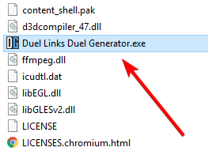
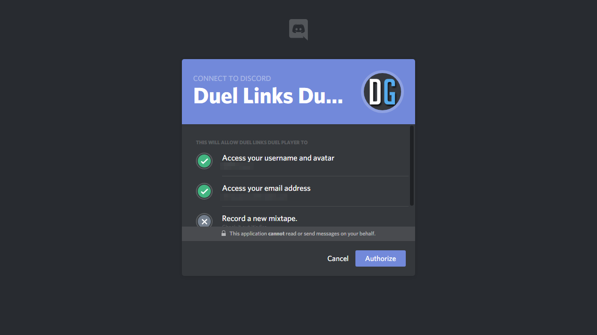
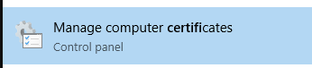

YU-GI-OH DUEL LINKS
Disclaimer:
Just a friendly reminder, if you are using this app the data sent to the server is taken to consideration, from all case studies from banned accounts they were from instant wins + speed hacks, although I can't claim this app to be fool proof there's a slim chance Konami will flag your account. The replay method returns the server you just finished watching but any pve duel sends the data you used in your duel, since duel points are going to be random and not instant don't be too alarmed by Konami touching your account. However, if you don't feel comfortable, use a throwaway account, since everything will be unlocked anyways
 Nox Installation Guide
Nox Installation Guide
 Steam Installation Guide
Steam Installation Guide
Installation Instructions
Download the App Here
Sign up for Effy as a $5.00 (USD) Patreon with your Discord Information (Username/ID)
Extract the .zip file and launch the application
Allow access to the application
You will need to login into your Discord account (This is for authentication)
Authorize the Discord Application
You will be greeted by the Application
While this Application can be used on Steam version, I encourage you using NOX Player. We are going to grab a file inside the Application in a folder called
.http-mitm-proxy
Inside this folder there is two folders called
certsandkeysopen the certs folder and there will be a file calledca.pemwe need to import that file into NOX.Launch NOX Player and navigate to Settings -> Security -> Credential Storage | Install certificates from SD Card
Once you find your
ca.pemfile install it to NOX, you can name it whatever you like- Once the certificate is install you will need to change the proxy settings inside your WIFI settings, go to your WIFI settings and click
Modify Networkclick onShow advance optionsand go to Proxy and selectManualfor your Proxy hostname you will need to go to your command linecmdand run the commandipconfigfind yourIPv4 Addressand for the port you will use8888 - You can now launch Duel Links and go into an NPC battle or even clicking the Replay Button to enable the Application
- You will need to install
ca.pemon your Windows machine in order for the app to work - Locate your certificates settings
 - Right-click on
Enterprise Trustfolder and import your certificate - Nagivate to your Proxy Settings on Windows

- You will need to adjust your proxy settings, you will need to download proxy.pac put the directory the file was saved. In your proxy address box use
http=127.0.0.1:8888;https=127.0.0.1:8888
- You can now launch Duel Links and go into an NPC battle or even clicking the Replay Button to enable the Application
- Enjoy Using The App! ❤️